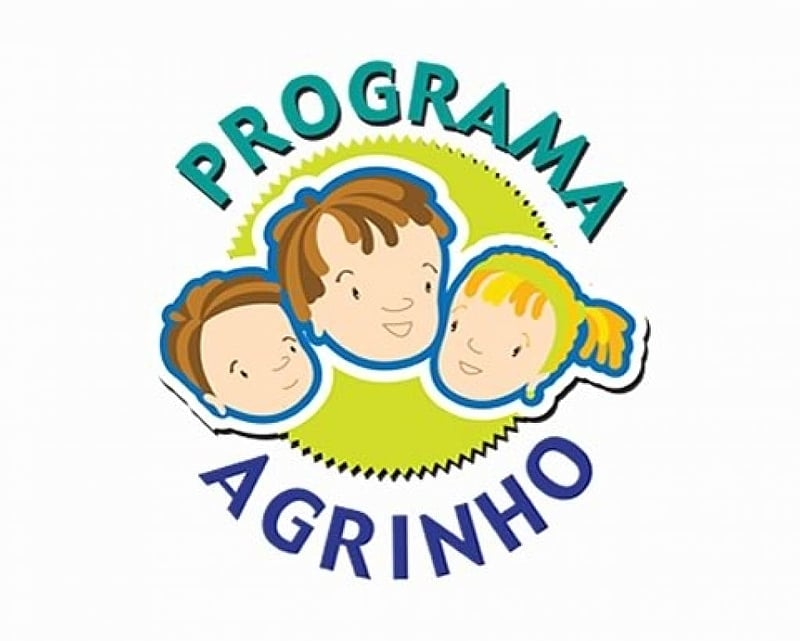

01
Oficinas educativas
Aulas interativas sobre conservação de recursos naturais, agricultura sustentável e gestão de resíduos.
Educação • Campo • Futuro
Um projeto dedicado à educação, cidadania e sustentabilidade, aproximando conhecimento e práticas responsáveis para construir um futuro melhor.

Sobre o projeto
O Agrinho é um programa dedicado à educação e à cidadania, com foco especial em crianças e jovens do meio rural. A proposta integra conhecimentos acadêmicos e práticas sustentáveis para contribuir com a formação dos participantes.
A missão apresentada neste projeto é promover uma educação de qualidade, abordando temas como meio ambiente, sustentabilidade e responsabilidade social.
Sua visão é contribuir para um futuro mais sustentável e inclusivo, preparando novas gerações para enfrentar desafios ambientais e sociais.
Como acontece
Atividades que conectam aprendizado, comunidade e sustentabilidade.
Aulas interativas sobre conservação de recursos naturais, agricultura sustentável e gestão de resíduos.
Experiências práticas com cultivo de plantas, hortas comunitárias e áreas de preservação ambiental.
Eventos que incentivam a integração cultural, o respeito à diversidade e a valorização das tradições.
Campanhas e iniciativas para sensibilizar a comunidade sobre questões ambientais e sociais.
Nossa direção
O projeto busca unir educação, responsabilidade e práticas sustentáveis para estimular mudanças positivas.
Desenvolver a consciência ambiental e a responsabilidade social.
Promover a inclusão social e a educação de qualidade.
Estabelecer uma conexão entre os jovens e o meio rural.
Incentivar práticas sustentáveis e a preservação ambiental.
Entre em contato
Para mais informações sobre o programa Agrinho, confira os canais abaixo.
⌖ Rua Exemplo, 123 — São Paulo - SP